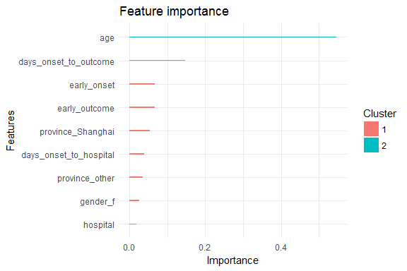

In last week’s post I explored whether machine learning models can be applied to predict flu deaths from the 2013 outbreak of influenza A H7N9 in China. There, I compared random forests, elastic-net regularized generalized linear models, k-nearest neighbors, penalized discriminant analysis, stabilized linear discriminant analysis, nearest shrunken centroids, single C5.0 tree and partial least squares.
Extreme gradient boosting
Extreme gradient boosting (XGBoost) is a faster and improved implementation of gradient boosting for supervised learning and has recently been very successfully applied in Kaggle competitions. Because I’ve heard XGBoost’s praise being sung everywhere lately, I wanted to get my feet wet with it too. So this week I want to compare the prediction success of gradient boosting with the same dataset. Additionally, I want to test the influence of different preprocessing methods on the outcome.
“XGBoost uses a more regularized model formalization to control over-fitting, which gives it better performance.” Tianqi Chen, developer of xgboost
XGBoost is a tree ensemble model, which means the sum of predictions from a set of classification and regression trees (CART). In that, XGBoost is similar to Random Forests but it uses a different approach to model training.
Starting with the same test and training data (partitioned into validation test and validation train subsets) from last week’s post, I am training extreme gradient boosting models as implemented in the xgboost and caret packages with different preprocessing settings.
Out of the different implementations and variations of gradient boosting algorithms, caret performed best on PCA-preprocessed data in the validation set. These paramteres were then used to predict the outcome in the test set and compare it to last week’s predictions.
Compared to last week, there is much less uncertainty in the predictions from XGBoost. Overall, I would say that this algorithm is superior to the others I have used before.
xgboost
Extreme gradient boosting is implemented in the xgboost package.
# install the stable/pre-compiled version from CRAN
install.packages('xgboost')
# or install from weekly updated drat repo
install.packages("drat", repos="https://cran.rstudio.com")
drat:::addRepo("dmlc")
install.packages("xgboost", repos="http://dmlc.ml/drat/", type="source")
XGBoost supports only numbers, so the outcome classes have to be converted into integers and both training and test data have to be in numeric matrix format.
library(xgboost)
matrix_train <- apply(val_train_X, 2, function(x) as.numeric(as.character(x)))
outcome_death_train <- ifelse(val_train_data$outcome == "Death", 1, 0)
matrix_test <- apply(val_test_X, 2, function(x) as.numeric(as.character(x)))
outcome_death_test <- ifelse(val_test_data$outcome == "Death", 1, 0)
xgb_train_matrix <- xgb.DMatrix(data = as.matrix(matrix_train), label = outcome_death_train)
xgb_test_matrix <- xgb.DMatrix(data = as.matrix(matrix_test), label = outcome_death_test)
watchlist <- list(train = xgb_train_matrix, test = xgb_test_matrix)
label <- getinfo(xgb_test_matrix, "label")
I am using cross validation to evaluate the error rate.
param <- list("objective" = "binary:logistic")
xgb.cv(param = param,
data = xgb_train_matrix,
nfold = 3,
label = getinfo(xgb_train_matrix, "label"),
nrounds = 5)
## [1] train-error:0.133950+0.022131 test-error:0.341131+0.129919
## [2] train-error:0.124941+0.033432 test-error:0.358674+0.105191
## [3] train-error:0.115932+0.045501 test-error:0.340156+0.092598
## [4] train-error:0.124941+0.033432 test-error:0.340156+0.092598
## [5] train-error:0.089616+0.051301 test-error:0.394737+0.098465
Training with gbtree
gbtree is the default booster for xgb.train.
bst_1 <- xgb.train(data = xgb_train_matrix,
label = getinfo(xgb_train_matrix, "label"),
max.depth = 2,
eta = 1,
nthread = 4,
nround = 50, # number of trees used for model building
watchlist = watchlist,
objective = "binary:logistic")
## [1] train-error:0.250000 test-error:0.347826
## [2] train-error:0.178571 test-error:0.304348
## [3] train-error:0.142857 test-error:0.347826
## [4] train-error:0.089286 test-error:0.260870
## [5] train-error:0.053571 test-error:0.347826
## [6] train-error:0.053571 test-error:0.391304
## [7] train-error:0.035714 test-error:0.347826
## [8] train-error:0.000000 test-error:0.391304
## [9] train-error:0.017857 test-error:0.391304
## [10] train-error:0.000000 test-error:0.391304
## [11] train-error:0.000000 test-error:0.391304
## [12] train-error:0.000000 test-error:0.347826
## [13] train-error:0.000000 test-error:0.347826
## [14] train-error:0.000000 test-error:0.347826
## [15] train-error:0.000000 test-error:0.347826
## [16] train-error:0.000000 test-error:0.347826
## [17] train-error:0.000000 test-error:0.347826
## [18] train-error:0.000000 test-error:0.347826
## [19] train-error:0.000000 test-error:0.347826
## [20] train-error:0.000000 test-error:0.347826
## [21] train-error:0.000000 test-error:0.347826
## [22] train-error:0.000000 test-error:0.347826
## [23] train-error:0.000000 test-error:0.347826
## [24] train-error:0.000000 test-error:0.347826
## [25] train-error:0.000000 test-error:0.347826
## [26] train-error:0.000000 test-error:0.347826
## [27] train-error:0.000000 test-error:0.347826
## [28] train-error:0.000000 test-error:0.347826
## [29] train-error:0.000000 test-error:0.347826
## [30] train-error:0.000000 test-error:0.347826
## [31] train-error:0.000000 test-error:0.347826
## [32] train-error:0.000000 test-error:0.347826
## [33] train-error:0.000000 test-error:0.347826
## [34] train-error:0.000000 test-error:0.347826
## [35] train-error:0.000000 test-error:0.347826
## [36] train-error:0.000000 test-error:0.347826
## [37] train-error:0.000000 test-error:0.347826
## [38] train-error:0.000000 test-error:0.347826
## [39] train-error:0.000000 test-error:0.347826
## [40] train-error:0.000000 test-error:0.347826
## [41] train-error:0.000000 test-error:0.347826
## [42] train-error:0.000000 test-error:0.347826
## [43] train-error:0.000000 test-error:0.347826
## [44] train-error:0.000000 test-error:0.347826
## [45] train-error:0.000000 test-error:0.347826
## [46] train-error:0.000000 test-error:0.347826
## [47] train-error:0.000000 test-error:0.347826
## [48] train-error:0.000000 test-error:0.347826
## [49] train-error:0.000000 test-error:0.347826
## [50] train-error:0.000000 test-error:0.347826
Each feature is grouped by importance with k-means clustering. Gain is the improvement in accuracy that the addition of a feature brings to the branches it is on.
features = colnames(matrix_train)
importance_matrix_1 <- xgb.importance(features, model = bst_1)
print(importance_matrix_1)
## Feature Gain Cover Frequency
## 1: age 0.54677689 0.45726557 0.43333333
## 2: days_onset_to_outcome 0.14753698 0.11686537 0.11111111
## 3: early_onset 0.06724531 0.07365416 0.07777778
## 4: early_outcome 0.06679880 0.08869426 0.07777778
## 5: province_Shanghai 0.05325295 0.04317030 0.04444444
## 6: days_onset_to_hospital 0.03883631 0.11300882 0.13333333
## 7: province_other 0.03502971 0.03977657 0.04444444
## 8: gender_f 0.02610959 0.02484170 0.01111111
## 9: hospital 0.01841345 0.04272324 0.06666667
xgb.ggplot.importance(importance_matrix_1) +
theme_minimal()

pred_1 <- predict(bst_1, xgb_test_matrix)
result_1 <- data.frame(case_ID = rownames(val_test_data),
outcome = val_test_data$outcome,
label = label,
prediction_p_death = round(pred_1, digits = 2),
prediction = as.integer(pred_1 > 0.5),
prediction_eval = ifelse(as.integer(pred_1 > 0.5) != label, "wrong", "correct"))
result_1
## case_ID outcome label prediction_p_death prediction prediction_eval
## 1 case_123 Death 1 0.01 0 wrong
## 2 case_127 Recover 0 0.00 0 correct
## 3 case_128 Recover 0 0.96 1 wrong
## 4 case_14 Recover 0 0.76 1 wrong
## 5 case_19 Death 1 0.95 1 correct
## 6 case_2 Death 1 0.85 1 correct
## 7 case_20 Recover 0 0.98 1 wrong
## 8 case_21 Recover 0 0.06 0 correct
## 9 case_34 Death 1 1.00 1 correct
## 10 case_37 Recover 0 0.00 0 correct
## 11 case_5 Recover 0 0.03 0 correct
## 12 case_51 Recover 0 0.27 0 correct
## 13 case_55 Recover 0 0.11 0 correct
## 14 case_6 Death 1 0.26 0 wrong
## 15 case_61 Death 1 1.00 1 correct
## 16 case_65 Recover 0 0.00 0 correct
## 17 case_74 Recover 0 0.92 1 wrong
## 18 case_78 Death 1 0.03 0 wrong
## 19 case_79 Recover 0 0.00 0 correct
## 20 case_8 Death 1 0.06 0 wrong
## 21 case_87 Death 1 0.64 1 correct
## 22 case_91 Recover 0 0.00 0 correct
## 23 case_94 Recover 0 0.01 0 correct
err <- as.numeric(sum(as.integer(pred_1 > 0.5) != label))/length(label)
print(paste("test-error =", round(err, digits = 2)))
## [1] "test-error = 0.35"
Training with gblinear
bst_2 <- xgb.train(data = xgb_train_matrix,
booster = "gblinear",
label = getinfo(xgb_train_matrix, "label"),
max.depth = 2,
eta = 1,
nthread = 4,
nround = 50, # number of trees used for model building
watchlist = watchlist,
objective = "binary:logistic")
## [1] train-error:0.339286 test-error:0.434783
## [2] train-error:0.303571 test-error:0.391304
## [3] train-error:0.285714 test-error:0.347826
## [4] train-error:0.303571 test-error:0.347826
## [5] train-error:0.285714 test-error:0.347826
## [6] train-error:0.285714 test-error:0.391304
## [7] train-error:0.285714 test-error:0.391304
## [8] train-error:0.267857 test-error:0.391304
## [9] train-error:0.250000 test-error:0.391304
## [10] train-error:0.250000 test-error:0.478261
## [11] train-error:0.250000 test-error:0.434783
## [12] train-error:0.232143 test-error:0.434783
## [13] train-error:0.232143 test-error:0.434783
## [14] train-error:0.232143 test-error:0.434783
## [15] train-error:0.232143 test-error:0.434783
## [16] train-error:0.232143 test-error:0.434783
## [17] train-error:0.232143 test-error:0.434783
## [18] train-error:0.232143 test-error:0.434783
## [19] train-error:0.232143 test-error:0.434783
## [20] train-error:0.232143 test-error:0.434783
## [21] train-error:0.214286 test-error:0.434783
## [22] train-error:0.214286 test-error:0.434783
## [23] train-error:0.214286 test-error:0.434783
## [24] train-error:0.214286 test-error:0.434783
## [25] train-error:0.214286 test-error:0.434783
## [26] train-error:0.214286 test-error:0.434783
## [27] train-error:0.214286 test-error:0.434783
## [28] train-error:0.214286 test-error:0.434783
## [29] train-error:0.214286 test-error:0.434783
## [30] train-error:0.232143 test-error:0.434783
## [31] train-error:0.214286 test-error:0.434783
## [32] train-error:0.214286 test-error:0.434783
## [33] train-error:0.214286 test-error:0.434783
## [34] train-error:0.214286 test-error:0.434783
## [35] train-error:0.214286 test-error:0.434783
## [36] train-error:0.214286 test-error:0.434783
## [37] train-error:0.214286 test-error:0.434783
## [38] train-error:0.214286 test-error:0.434783
## [39] train-error:0.214286 test-error:0.434783
## [40] train-error:0.214286 test-error:0.434783
## [41] train-error:0.214286 test-error:0.434783
## [42] train-error:0.214286 test-error:0.434783
## [43] train-error:0.214286 test-error:0.434783
## [44] train-error:0.214286 test-error:0.434783
## [45] train-error:0.214286 test-error:0.434783
## [46] train-error:0.214286 test-error:0.434783
## [47] train-error:0.214286 test-error:0.434783
## [48] train-error:0.214286 test-error:0.434783
## [49] train-error:0.214286 test-error:0.434783
## [50] train-error:0.214286 test-error:0.434783
Each feature is grouped by importance with k-means clustering. Gain is the improvement in accuracy that the addition of a feature brings to the branches it is on.
features = colnames(matrix_train)
importance_matrix_2 <- xgb.importance(features, model = bst_2)
print(importance_matrix_2)
## Feature Weight
## 1: age 0.0439012
## 2: hospital -0.3131160
## 3: gender_f 0.8067830
## 4: province_Jiangsu -0.8807380
## 5: province_Shanghai -0.4065330
## 6: province_Zhejiang -0.1284590
## 7: province_other 0.4510330
## 8: days_onset_to_outcome 0.0209952
## 9: days_onset_to_hospital -0.0856504
## 10: early_onset 0.6452190
## 11: early_outcome 2.5134300
xgb.ggplot.importance(importance_matrix_2) +
theme_minimal()

pred_2 <- predict(bst_2, xgb_test_matrix)
result_2 <- data.frame(case_ID = rownames(val_test_data),
outcome = val_test_data$outcome,
label = label,
prediction_p_death = round(pred_2, digits = 2),
prediction = as.integer(pred_2 > 0.5),
prediction_eval = ifelse(as.integer(pred_2 > 0.5) != label, "wrong", "correct"))
result_2
## case_ID outcome label prediction_p_death prediction prediction_eval
## 1 case_123 Death 1 0.10 0 wrong
## 2 case_127 Recover 0 0.03 0 correct
## 3 case_128 Recover 0 0.13 0 correct
## 4 case_14 Recover 0 0.15 0 correct
## 5 case_19 Death 1 0.28 0 wrong
## 6 case_2 Death 1 0.28 0 wrong
## 7 case_20 Recover 0 0.80 1 wrong
## 8 case_21 Recover 0 0.79 1 wrong
## 9 case_34 Death 1 0.74 1 correct
## 10 case_37 Recover 0 0.06 0 correct
## 11 case_5 Recover 0 0.14 0 correct
## 12 case_51 Recover 0 0.77 1 wrong
## 13 case_55 Recover 0 0.23 0 correct
## 14 case_6 Death 1 0.47 0 wrong
## 15 case_61 Death 1 0.52 1 correct
## 16 case_65 Recover 0 0.03 0 correct
## 17 case_74 Recover 0 0.70 1 wrong
## 18 case_78 Death 1 0.22 0 wrong
## 19 case_79 Recover 0 0.06 0 correct
## 20 case_8 Death 1 0.36 0 wrong
## 21 case_87 Death 1 0.65 1 correct
## 22 case_91 Recover 0 0.05 0 correct
## 23 case_94 Recover 0 0.07 0 correct
err <- as.numeric(sum(as.integer(pred_2 > 0.5) != label))/length(label)
print(paste("test-error =", round(err, digits = 2)))
## [1] "test-error = 0.43"
caret
Extreme gradient boosting is also implemented in the caret package. Caret also provides options for preprocessing, of which I will compare a few.
No preprocessing
library(caret)
set.seed(27)
model_xgb_null <-train(outcome ~ .,
data=val_train_data,
method="xgbTree",
preProcess = NULL,
trControl = trainControl(method = "repeatedcv", number = 5, repeats = 10, verboseIter = FALSE))
confusionMatrix(predict(model_xgb_null, val_test_data[, -1]), val_test_data$outcome)
## Confusion Matrix and Statistics
##
## Reference
## Prediction Death Recover
## Death 5 4
## Recover 4 10
##
## Accuracy : 0.6522
## 95% CI : (0.4273, 0.8362)
## No Information Rate : 0.6087
## P-Value [Acc > NIR] : 0.4216
##
## Kappa : 0.2698
## Mcnemar's Test P-Value : 1.0000
##
## Sensitivity : 0.5556
## Specificity : 0.7143
## Pos Pred Value : 0.5556
## Neg Pred Value : 0.7143
## Prevalence : 0.3913
## Detection Rate : 0.2174
## Detection Prevalence : 0.3913
## Balanced Accuracy : 0.6349
##
## 'Positive' Class : Death
##
Scaling and centering
With this method the column variables are centered (subtracting the column mean from each value in a column) and standardized (dividing by the column standard deviation).
set.seed(27)
model_xgb_sc_cen <-train(outcome ~ .,
data=val_train_data,
method="xgbTree",
preProcess = c("scale", "center"),
trControl = trainControl(method = "repeatedcv", number = 5, repeats = 10, verboseIter = FALSE))
confusionMatrix(predict(model_xgb_sc_cen, val_test_data[, -1]), val_test_data$outcome)
## Confusion Matrix and Statistics
##
## Reference
## Prediction Death Recover
## Death 5 4
## Recover 4 10
##
## Accuracy : 0.6522
## 95% CI : (0.4273, 0.8362)
## No Information Rate : 0.6087
## P-Value [Acc > NIR] : 0.4216
##
## Kappa : 0.2698
## Mcnemar's Test P-Value : 1.0000
##
## Sensitivity : 0.5556
## Specificity : 0.7143
## Pos Pred Value : 0.5556
## Neg Pred Value : 0.7143
## Prevalence : 0.3913
## Detection Rate : 0.2174
## Detection Prevalence : 0.3913
## Balanced Accuracy : 0.6349
##
## 'Positive' Class : Death
##
Scaling and centering did not improve the predictions.
pred_3 <- predict(model_xgb_sc_cen, val_test_data[, -1])
pred_3b <- round(predict(model_xgb_sc_cen, val_test_data[, -1], type="prob"), digits = 2)
result_3 <- data.frame(case_ID = rownames(val_test_data),
outcome = val_test_data$outcome,
label = label,
prediction = pred_3,
pred_3b)
result_3$prediction_eval <- ifelse(result_3$prediction != result_3$outcome, "wrong", "correct")
result_3
## case_ID outcome label prediction Death Recover prediction_eval
## 1 case_123 Death 1 Recover 0.04 0.96 wrong
## 2 case_127 Recover 0 Recover 0.04 0.96 correct
## 3 case_128 Recover 0 Death 0.81 0.19 wrong
## 4 case_14 Recover 0 Death 0.70 0.30 wrong
## 5 case_19 Death 1 Death 0.67 0.33 correct
## 6 case_2 Death 1 Death 0.66 0.34 correct
## 7 case_20 Recover 0 Death 0.76 0.24 wrong
## 8 case_21 Recover 0 Recover 0.17 0.83 correct
## 9 case_34 Death 1 Death 0.94 0.06 correct
## 10 case_37 Recover 0 Recover 0.02 0.98 correct
## 11 case_5 Recover 0 Recover 0.09 0.91 correct
## 12 case_51 Recover 0 Recover 0.41 0.59 correct
## 13 case_55 Recover 0 Recover 0.12 0.88 correct
## 14 case_6 Death 1 Recover 0.30 0.70 wrong
## 15 case_61 Death 1 Death 0.99 0.01 correct
## 16 case_65 Recover 0 Recover 0.01 0.99 correct
## 17 case_74 Recover 0 Death 0.85 0.15 wrong
## 18 case_78 Death 1 Recover 0.21 0.79 wrong
## 19 case_79 Recover 0 Recover 0.01 0.99 correct
## 20 case_8 Death 1 Recover 0.20 0.80 wrong
## 21 case_87 Death 1 Death 0.65 0.35 correct
## 22 case_91 Recover 0 Recover 0.01 0.99 correct
## 23 case_94 Recover 0 Recover 0.07 0.93 correct
Box-Cox transformation
The Box-Cox power transformation is used to normalize data.
set.seed(27)
model_xgb_BoxCox <-train(outcome ~ .,
data=val_train_data,
method="xgbTree",
preProcess = "BoxCox",
trControl = trainControl(method = "repeatedcv", number = 5, repeats = 10, verboseIter = FALSE))
confusionMatrix(predict(model_xgb_BoxCox, val_test_data[, -1]), val_test_data$outcome)
## Confusion Matrix and Statistics
##
## Reference
## Prediction Death Recover
## Death 5 4
## Recover 4 10
##
## Accuracy : 0.6522
## 95% CI : (0.4273, 0.8362)
## No Information Rate : 0.6087
## P-Value [Acc > NIR] : 0.4216
##
## Kappa : 0.2698
## Mcnemar's Test P-Value : 1.0000
##
## Sensitivity : 0.5556
## Specificity : 0.7143
## Pos Pred Value : 0.5556
## Neg Pred Value : 0.7143
## Prevalence : 0.3913
## Detection Rate : 0.2174
## Detection Prevalence : 0.3913
## Balanced Accuracy : 0.6349
##
## 'Positive' Class : Death
##
Box-Cox transformation did not improve the predictions either.
pred_4 <- predict(model_xgb_BoxCox, val_test_data[, -1])
pred_4b <- round(predict(model_xgb_BoxCox, val_test_data[, -1], type="prob"), digits = 2)
result_4 <- data.frame(case_ID = rownames(val_test_data),
outcome = val_test_data$outcome,
label = label,
prediction = pred_4,
pred_4b)
result_4$prediction_eval <- ifelse(result_4$prediction != result_4$outcome, "wrong", "correct")
result_4
## case_ID outcome label prediction Death Recover prediction_eval
## 1 case_123 Death 1 Recover 0.01 0.99 wrong
## 2 case_127 Recover 0 Recover 0.01 0.99 correct
## 3 case_128 Recover 0 Death 0.88 0.12 wrong
## 4 case_14 Recover 0 Death 0.81 0.19 wrong
## 5 case_19 Death 1 Death 0.88 0.12 correct
## 6 case_2 Death 1 Death 0.79 0.21 correct
## 7 case_20 Recover 0 Death 0.84 0.16 wrong
## 8 case_21 Recover 0 Recover 0.07 0.93 correct
## 9 case_34 Death 1 Death 0.97 0.03 correct
## 10 case_37 Recover 0 Recover 0.01 0.99 correct
## 11 case_5 Recover 0 Recover 0.06 0.94 correct
## 12 case_51 Recover 0 Recover 0.27 0.73 correct
## 13 case_55 Recover 0 Recover 0.09 0.91 correct
## 14 case_6 Death 1 Recover 0.30 0.70 wrong
## 15 case_61 Death 1 Death 1.00 0.00 correct
## 16 case_65 Recover 0 Recover 0.00 1.00 correct
## 17 case_74 Recover 0 Death 0.90 0.10 wrong
## 18 case_78 Death 1 Recover 0.11 0.89 wrong
## 19 case_79 Recover 0 Recover 0.00 1.00 correct
## 20 case_8 Death 1 Recover 0.13 0.87 wrong
## 21 case_87 Death 1 Death 0.61 0.39 correct
## 22 case_91 Recover 0 Recover 0.00 1.00 correct
## 23 case_94 Recover 0 Recover 0.04 0.96 correct
Principal Component Analysis (PCA)
PCA is used for dimensionality reduction. When applied as a preprocessing method the number of features are reduced by using the eigenvectors of the covariance matrix.
set.seed(27)
model_xgb_pca <-train(outcome ~ .,
data=val_train_data,
method="xgbTree",
preProcess = "pca",
trControl = trainControl(method = "repeatedcv", number = 5, repeats = 10, verboseIter = FALSE))
confusionMatrix(predict(model_xgb_pca, val_test_data[, -1]), val_test_data$outcome)
## Confusion Matrix and Statistics
##
## Reference
## Prediction Death Recover
## Death 4 2
## Recover 5 12
##
## Accuracy : 0.6957
## 95% CI : (0.4708, 0.8679)
## No Information Rate : 0.6087
## P-Value [Acc > NIR] : 0.2644
##
## Kappa : 0.3207
## Mcnemar's Test P-Value : 0.4497
##
## Sensitivity : 0.4444
## Specificity : 0.8571
## Pos Pred Value : 0.6667
## Neg Pred Value : 0.7059
## Prevalence : 0.3913
## Detection Rate : 0.1739
## Detection Prevalence : 0.2609
## Balanced Accuracy : 0.6508
##
## 'Positive' Class : Death
##
PCA did improve the predictions slightly.
pred_5 <- predict(model_xgb_pca, val_test_data[, -1])
pred_5b <- round(predict(model_xgb_pca, val_test_data[, -1], type="prob"), digits = 2)
result_5 <- data.frame(case_ID = rownames(val_test_data),
outcome = val_test_data$outcome,
label = label,
prediction = pred_5,
pred_5b)
result_5$prediction_eval <- ifelse(result_5$prediction != result_5$outcome, "wrong", "correct")
result_5
## case_ID outcome label prediction Death Recover prediction_eval
## 1 case_123 Death 1 Recover 0.02 0.98 wrong
## 2 case_127 Recover 0 Recover 0.29 0.71 correct
## 3 case_128 Recover 0 Recover 0.01 0.99 correct
## 4 case_14 Recover 0 Recover 0.44 0.56 correct
## 5 case_19 Death 1 Recover 0.07 0.93 wrong
## 6 case_2 Death 1 Recover 0.26 0.74 wrong
## 7 case_20 Recover 0 Recover 0.16 0.84 correct
## 8 case_21 Recover 0 Death 0.57 0.43 wrong
## 9 case_34 Death 1 Death 0.93 0.07 correct
## 10 case_37 Recover 0 Recover 0.03 0.97 correct
## 11 case_5 Recover 0 Recover 0.11 0.89 correct
## 12 case_51 Recover 0 Recover 0.19 0.81 correct
## 13 case_55 Recover 0 Recover 0.16 0.84 correct
## 14 case_6 Death 1 Death 0.55 0.45 correct
## 15 case_61 Death 1 Recover 0.22 0.78 wrong
## 16 case_65 Recover 0 Recover 0.08 0.92 correct
## 17 case_74 Recover 0 Death 0.67 0.33 wrong
## 18 case_78 Death 1 Death 0.87 0.13 correct
## 19 case_79 Recover 0 Recover 0.16 0.84 correct
## 20 case_8 Death 1 Recover 0.22 0.78 wrong
## 21 case_87 Death 1 Death 0.66 0.34 correct
## 22 case_91 Recover 0 Recover 0.01 0.99 correct
## 23 case_94 Recover 0 Recover 0.14 0.86 correct
Median imputation
set.seed(27)
model_xgb_medianImpute <-train(outcome ~ .,
data=val_train_data,
method="xgbTree",
preProcess = "medianImpute",
trControl = trainControl(method = "repeatedcv", number = 5, repeats = 10, verboseIter = FALSE))
confusionMatrix(predict(model_xgb_medianImpute, val_test_data[, -1]), val_test_data$outcome)
## Confusion Matrix and Statistics
##
## Reference
## Prediction Death Recover
## Death 5 4
## Recover 4 10
##
## Accuracy : 0.6522
## 95% CI : (0.4273, 0.8362)
## No Information Rate : 0.6087
## P-Value [Acc > NIR] : 0.4216
##
## Kappa : 0.2698
## Mcnemar's Test P-Value : 1.0000
##
## Sensitivity : 0.5556
## Specificity : 0.7143
## Pos Pred Value : 0.5556
## Neg Pred Value : 0.7143
## Prevalence : 0.3913
## Detection Rate : 0.2174
## Detection Prevalence : 0.3913
## Balanced Accuracy : 0.6349
##
## 'Positive' Class : Death
##
Median imputation did not improve the predictions either.
pred_6 <- predict(model_xgb_medianImpute, val_test_data[, -1])
pred_6b <- round(predict(model_xgb_medianImpute, val_test_data[, -1], type="prob"), digits = 2)
result_6 <- data.frame(case_ID = rownames(val_test_data),
outcome = val_test_data$outcome,
label = label,
prediction = pred_6,
pred_6b)
result_6$prediction_eval <- ifelse(result_6$prediction != result_6$outcome, "wrong", "correct")
result_6
## case_ID outcome label prediction Death Recover prediction_eval
## 1 case_123 Death 1 Recover 0.04 0.96 wrong
## 2 case_127 Recover 0 Recover 0.04 0.96 correct
## 3 case_128 Recover 0 Death 0.81 0.19 wrong
## 4 case_14 Recover 0 Death 0.70 0.30 wrong
## 5 case_19 Death 1 Death 0.67 0.33 correct
## 6 case_2 Death 1 Death 0.66 0.34 correct
## 7 case_20 Recover 0 Death 0.76 0.24 wrong
## 8 case_21 Recover 0 Recover 0.17 0.83 correct
## 9 case_34 Death 1 Death 0.94 0.06 correct
## 10 case_37 Recover 0 Recover 0.02 0.98 correct
## 11 case_5 Recover 0 Recover 0.09 0.91 correct
## 12 case_51 Recover 0 Recover 0.41 0.59 correct
## 13 case_55 Recover 0 Recover 0.12 0.88 correct
## 14 case_6 Death 1 Recover 0.30 0.70 wrong
## 15 case_61 Death 1 Death 0.99 0.01 correct
## 16 case_65 Recover 0 Recover 0.01 0.99 correct
## 17 case_74 Recover 0 Death 0.85 0.15 wrong
## 18 case_78 Death 1 Recover 0.21 0.79 wrong
## 19 case_79 Recover 0 Recover 0.01 0.99 correct
## 20 case_8 Death 1 Recover 0.20 0.80 wrong
## 21 case_87 Death 1 Death 0.65 0.35 correct
## 22 case_91 Recover 0 Recover 0.01 0.99 correct
## 23 case_94 Recover 0 Recover 0.07 0.93 correct
Comparison of extreme gradient boosting models
Combining results
library(dplyr)
result <- left_join(result_1[, c(1, 2, 6)], result_2[, c(1, 6)], by = "case_ID")
result <- left_join(result, result_3[, c(1, 7)], by = "case_ID")
result <- left_join(result, result_4[, c(1, 7)], by = "case_ID")
result <- left_join(result, result_5[, c(1, 7)], by = "case_ID")
result <- left_join(result, result_6[, c(1, 7)], by = "case_ID")
colnames(result)[-c(1:2)] <- c("pred_xgboost_gbtree", "pred_xgboost_gblinear", "model_xgb_sc_cen", "model_xgb_BoxCox", "pred_xgbTree_pca", "model_xgb_medianImpute")
What’s the rate of correctly predicted cases in the validation data?
round(sum(result$pred_xgboost_gbtree == "correct")/nrow(result), digits = 2)
## [1] 0.65
round(sum(result$pred_xgboost_gblinear == "correct")/nrow(result), digits = 2)
## [1] 0.57
round(sum(result$model_xgb_sc_cen == "correct")/nrow(result), digits = 2)
## [1] 0.65
round(sum(result$model_xgb_BoxCox == "correct")/nrow(result), digits = 2)
## [1] 0.65
round(sum(result$pred_xgbTree_pca == "correct")/nrow(result), digits = 2)
## [1] 0.7
round(sum(result$model_xgb_medianImpute == "correct")/nrow(result), digits = 2)
## [1] 0.65
PCA preprocessing combined with caret’s implementation of extreme gradient boosting had the highest number of accurately predicted cases in the validation data set.
Predicting unknown output
Because PCA preprocessing and caret’s implementation of extreme gradient boosting had the highest prediction accuracy, this model will be used to predict the unknown cases from the original dataset.
Uncertainty of prediction is accounted for with a cutoff below 0.7.
set.seed(27)
model_xgb_pca <-train(outcome ~ .,
data = train_data,
method = "xgbTree",
preProcess = "pca",
trControl = trainControl(method = "repeatedcv", number = 5, repeats = 10, verboseIter = FALSE))
pred <- predict(model_xgb_pca, test_data)
predb <- round(predict(model_xgb_pca, test_data, type="prob"), digits = 2)
result <- data.frame(case_ID = rownames(test_data),
prediction = pred,
predb)
result$predicted_outcome <- ifelse(result$Death > 0.7, "Death",
ifelse(result$Recover > 0.7, "Recover", "uncertain"))
result
## case_ID prediction Death Recover predicted_outcome
## 1 case_100 Recover 0.08 0.92 Recover
## 2 case_101 Recover 0.11 0.89 Recover
## 3 case_102 Recover 0.04 0.96 Recover
## 4 case_103 Recover 0.01 0.99 Recover
## 5 case_104 Recover 0.19 0.81 Recover
## 6 case_105 Recover 0.01 0.99 Recover
## 7 case_108 Death 0.99 0.01 Death
## 8 case_109 Recover 0.30 0.70 uncertain
## 9 case_110 Recover 0.16 0.84 Recover
## 10 case_112 Death 0.54 0.46 uncertain
## 11 case_113 Recover 0.02 0.98 Recover
## 12 case_114 Recover 0.30 0.70 uncertain
## 13 case_115 Recover 0.02 0.98 Recover
## 14 case_118 Death 0.65 0.35 uncertain
## 15 case_120 Death 0.89 0.11 Death
## 16 case_122 Recover 0.00 1.00 Recover
## 17 case_126 Recover 0.04 0.96 Recover
## 18 case_130 Recover 0.42 0.58 uncertain
## 19 case_132 Recover 0.47 0.53 uncertain
## 20 case_136 Death 0.86 0.14 Death
## 21 case_15 Death 0.99 0.01 Death
## 22 case_16 Death 0.91 0.09 Death
## 23 case_22 Death 0.80 0.20 Death
## 24 case_28 Death 0.91 0.09 Death
## 25 case_31 Death 1.00 0.00 Death
## 26 case_32 Death 0.93 0.07 Death
## 27 case_38 Death 0.87 0.13 Death
## 28 case_39 Death 0.88 0.12 Death
## 29 case_4 Death 0.99 0.01 Death
## 30 case_40 Death 1.00 0.00 Death
## 31 case_41 Death 0.95 0.05 Death
## 32 case_42 Recover 0.49 0.51 uncertain
## 33 case_47 Death 0.91 0.09 Death
## 34 case_48 Death 0.95 0.05 Death
## 35 case_52 Death 0.62 0.38 uncertain
## 36 case_54 Recover 0.43 0.57 uncertain
## 37 case_56 Death 0.81 0.19 Death
## 38 case_62 Death 0.58 0.42 uncertain
## 39 case_63 Recover 0.44 0.56 uncertain
## 40 case_66 Recover 0.18 0.82 Recover
## 41 case_67 Recover 0.02 0.98 Recover
## 42 case_68 Recover 0.27 0.73 Recover
## 43 case_69 Recover 0.35 0.65 uncertain
## 44 case_70 Recover 0.02 0.98 Recover
## 45 case_71 Recover 0.17 0.83 Recover
## 46 case_80 Recover 0.05 0.95 Recover
## 47 case_84 Recover 0.02 0.98 Recover
## 48 case_85 Death 0.99 0.01 Death
## 49 case_86 Recover 0.02 0.98 Recover
## 50 case_88 Recover 0.02 0.98 Recover
## 51 case_9 Death 0.98 0.02 Death
## 52 case_90 Recover 0.08 0.92 Recover
## 53 case_92 Recover 0.04 0.96 Recover
## 54 case_93 Recover 0.43 0.57 uncertain
## 55 case_95 Recover 0.11 0.89 Recover
## 56 case_96 Death 0.68 0.32 uncertain
## 57 case_99 Recover 0.04 0.96 Recover
Comparison with predicted outcome from last week’s analyses
Plotting predicted outcome
Results from last week’s analysis come from the following part of the analysis:
results <- data.frame(randomForest = predict(model_rf, newdata = test_data, type="prob"),
glmnet = predict(model_glmnet, newdata = test_data, type="prob"),
kknn = predict(model_kknn, newdata = test_data, type="prob"),
pda = predict(model_pda, newdata = test_data, type="prob"),
slda = predict(model_slda, newdata = test_data, type="prob"),
pam = predict(model_pam, newdata = test_data, type="prob"),
C5.0Tree = predict(model_C5.0Tree, newdata = test_data, type="prob"),
pls = predict(model_pls, newdata = test_data, type="prob"))
results$sum_Death <- rowSums(results[, grep("Death", colnames(results))])
results$sum_Recover <- rowSums(results[, grep("Recover", colnames(results))])
results$log2_ratio <- log2(results$sum_Recover/results$sum_Death)
results$predicted_outcome <- ifelse(results$log2_ratio > 1.5, "Recover", ifelse(results$log2_ratio < -1.5, "Death", "uncertain"))
results[, -c(1:16)]
results <- results_last_week
Combining the table with predicted outcomes from this and last week with the original data.
result <- merge(result[, c(1, 5)], results_last_week[, ncol(results_last_week), drop = FALSE], by.x = "case_ID", by.y = "row.names")
colnames(result)[2:3] <- c("predicted_outcome_xgboost", "predicted_outcome_last_week")
results_combined <- merge(result, fluH7N9.china.2013[which(fluH7N9.china.2013$case.ID %in% result$case_ID), ],
by.x = "case_ID", by.y = "case.ID")
results_combined <- results_combined[, -c(6,7)]
For plotting with ggplot2, the dataframe needs to be gathered.
library(tidyr)
results_combined_gather <- results_combined %>%
gather(group_dates, date, date.of.onset:date.of.hospitalisation)
results_combined_gather$group_dates <- factor(results_combined_gather$group_dates, levels = c("date.of.onset", "date.of.hospitalisation"))
results_combined_gather$group_dates <- mapvalues(results_combined_gather$group_dates, from = c("date.of.onset", "date.of.hospitalisation"),
to = c("Date of onset", "Date of hospitalisation"))
results_combined_gather$gender <- mapvalues(results_combined_gather$gender, from = c("f", "m"),
to = c("Female", "Male"))
levels(results_combined_gather$gender) <- c(levels(results_combined_gather$gender), "unknown")
results_combined_gather$gender[is.na(results_combined_gather$gender)] <- "unknown"
results_combined_gather <- results_combined_gather %>%
gather(group_pred, prediction, predicted_outcome_xgboost:predicted_outcome_last_week)
results_combined_gather$group_pred <- mapvalues(results_combined_gather$group_pred, from = c("predicted_outcome_xgboost", "predicted_outcome_last_week"),
to = c("Predicted outcome from XGBoost", "Predicted outcome from last week"))
Setting a custom theme for plotting:
library(ggplot2)
my_theme <- function(base_size = 12, base_family = "sans"){
theme_minimal(base_size = base_size, base_family = base_family) +
theme(
axis.text = element_text(size = 12),
axis.text.x = element_text(angle = 45, vjust = 0.5, hjust = 0.5),
axis.title = element_text(size = 14),
panel.grid.major = element_line(color = "grey"),
panel.grid.minor = element_blank(),
panel.background = element_rect(fill = "aliceblue"),
strip.background = element_rect(fill = "lightgrey", color = "grey", size = 1),
strip.text = element_text(face = "bold", size = 12, color = "black"),
legend.position = "bottom",
legend.justification = "top",
legend.box = "horizontal",
legend.box.background = element_rect(colour = "grey50"),
legend.background = element_blank(),
panel.border = element_rect(color = "grey", fill = NA, size = 0.5),
panel.spacing = unit(1, "lines")
)
}
results_combined_gather$province <- mapvalues(results_combined_gather$province,
from = c("Anhui", "Beijing", "Fujian", "Guangdong", "Hebei", "Henan", "Hunan", "Jiangxi", "Shandong", "Taiwan"),
to = rep("Other", 10))
levels(results_combined_gather$gender) <- c(levels(results_combined_gather$gender), "unknown")
results_combined_gather$gender[is.na(results_combined_gather$gender)] <- "unknown"
results_combined_gather$province <- factor(results_combined_gather$province, levels = c("Jiangsu", "Shanghai", "Zhejiang", "Other"))
ggplot(data = subset(results_combined_gather, group_dates == "Date of onset"), aes(x = date, y = as.numeric(age), fill = prediction)) +
stat_density2d(aes(alpha = ..level..), geom = "polygon") +
geom_jitter(aes(color = prediction, shape = gender), size = 2) +
geom_rug(aes(color = prediction)) +
labs(
fill = "Predicted outcome",
color = "Predicted outcome",
alpha = "Level",
shape = "Gender",
x = "Date of onset in 2013",
y = "Age",
title = "2013 Influenza A H7N9 cases in China",
subtitle = "Predicted outcome of cases with unknown outcome",
caption = ""
) +
facet_grid(group_pred ~ province) +
my_theme() +
scale_shape_manual(values = c(15, 16, 17)) +
scale_color_brewer(palette="Set1", na.value = "grey50") +
scale_fill_brewer(palette="Set1")

There is much less uncertainty in the XGBoost data, even tough I used slightly different methods for classifying uncertainty: In last week’s analysis I based uncertainty on the ratio of combined prediction values from all analyses, this week uncertainty is based on the prediction value from one analysis.
For a comparison of feature selection methods see here.
If you are interested in more machine learning posts, check out the category listing for machine_learning.
sessionInfo()
## R version 3.3.2 (2016-10-31)
## Platform: x86_64-w64-mingw32/x64 (64-bit)
## Running under: Windows 7 x64 (build 7601) Service Pack 1
##
## locale:
## [1] LC_COLLATE=English_United States.1252 LC_CTYPE=English_United States.1252 LC_MONETARY=English_United States.1252 LC_NUMERIC=C LC_TIME=English_United States.1252
##
## attached base packages:
## [1] stats graphics grDevices utils datasets methods base
##
## other attached packages:
## [1] tidyr_0.6.0 plyr_1.8.4 xgboost_0.6-0 caret_6.0-73 ggplot2_2.2.0 lattice_0.20-34 mice_2.25 Rcpp_0.12.8 dplyr_0.5.0 outbreaks_1.0.0
##
## loaded via a namespace (and not attached):
## [1] Ckmeans.1d.dp_3.4.6-4 RColorBrewer_1.1-2 compiler_3.3.2 nloptr_1.0.4 class_7.3-14 iterators_1.0.8 tools_3.3.2 rpart_4.1-10 digest_0.6.10 lme4_1.1-12 evaluate_0.10 tibble_1.2 gtable_0.2.0 nlme_3.1-128 mgcv_1.8-16 Matrix_1.2-7.1 foreach_1.4.3 DBI_0.5-1 parallel_3.3.2 yaml_2.1.14 SparseM_1.74 e1071_1.6-7 stringr_1.1.0 knitr_1.15 MatrixModels_0.4-1 stats4_3.3.2 grid_3.3.2 nnet_7.3-12 data.table_1.9.6 R6_2.2.0 survival_2.40-1 rmarkdown_1.1 minqa_1.2.4 reshape2_1.4.2 car_2.1-3 magrittr_1.5 scales_0.4.1 codetools_0.2-15 ModelMetrics_1.1.0 htmltools_0.3.5 MASS_7.3-45 splines_3.3.2 assertthat_0.1 pbkrtest_0.4-6 colorspace_1.3-0 labeling_0.3 quantreg_5.29 stringi_1.1.2 lazyeval_0.2.0 munsell_0.4.3 chron_2.3-47